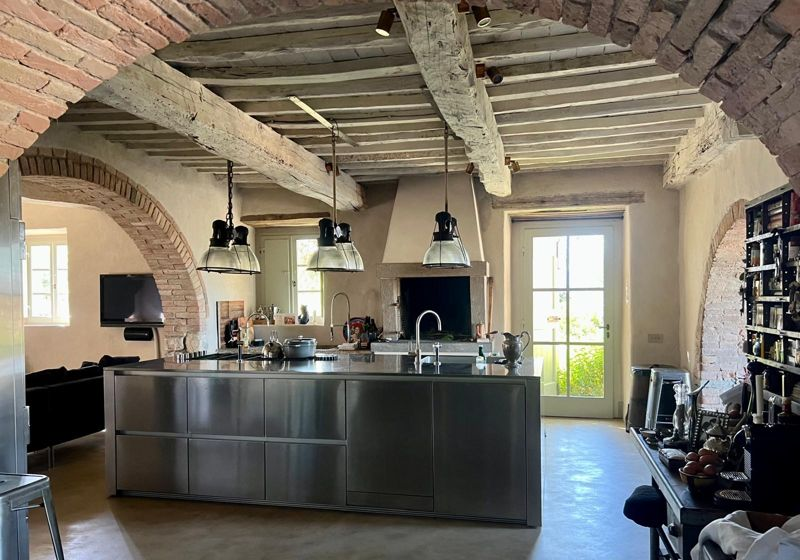
The kitchen
A professional steel kitchen under brick arches and old chestnut beams, open to the main dining and living area.
Welcome
Casa Rossa sits on the highest point of the Frescobaldi Castelgiocondo estate, with views in every direction across vines, forest and the hills of the Val d'Orcia.
Restored with patience over a decade, the house has been brought to life with style and comfort in every detail: crystal chandeliers and deep sofas, old chestnut beams and a professional kitchen, quiet corners for reading and a saltwater pool for long afternoons. It is a home first, full of character, art and books, and made for sharing.
The house is surrounded by a hectare and a half of olive groves, fruit trees and a garden of native plants, where swallows nest under the eaves and owls call at night. The castle is a fifteen-minute walk along the white roads, and Montalcino is a fifteen-minute drive.
The House
A main house of generous living spaces and five bedrooms, each with its own bathroom, plus a separate pool house across the courtyard.
View full gallery and bedrooms
A professional steel kitchen under brick arches and old chestnut beams, open to the main dining and living area.
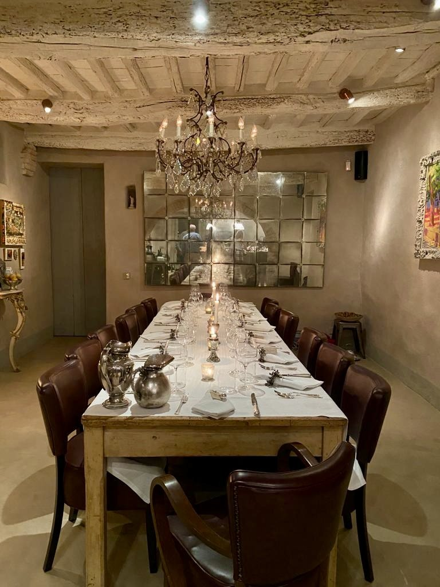
A long table beneath a crystal chandelier, for the dinners that go on well past midnight.
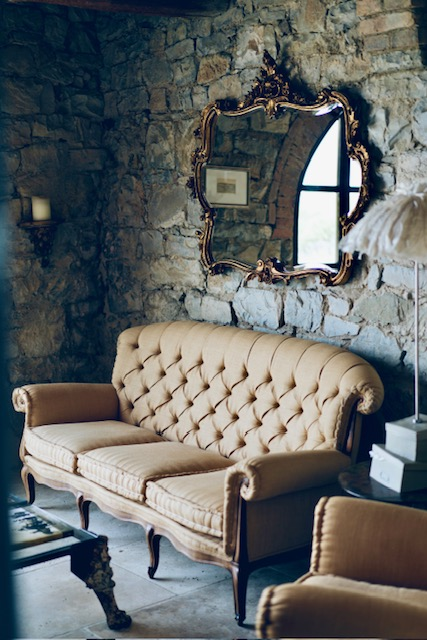
Exposed stone, a great carved fireplace and doors that open straight onto the garden.
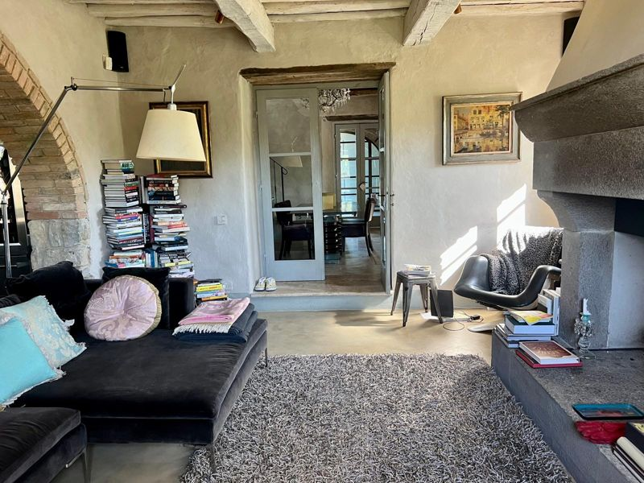
Deep sofas, stacks of books and a fire for cooler evenings.
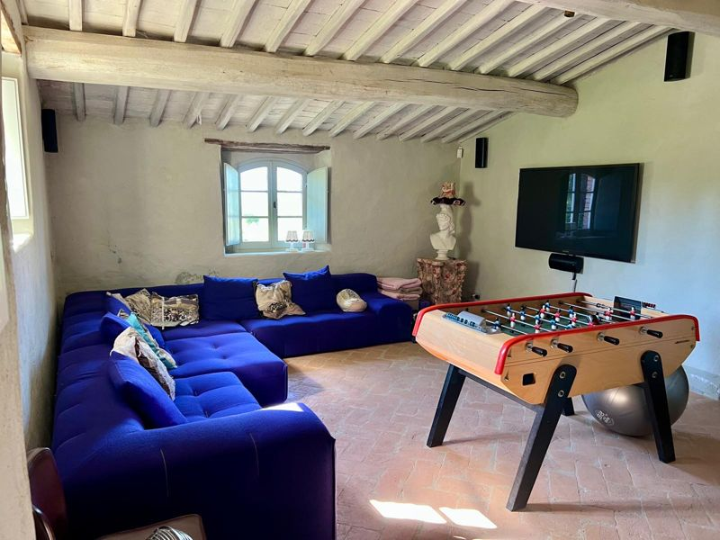
Big blue sofa, television and calcio balilla table football.
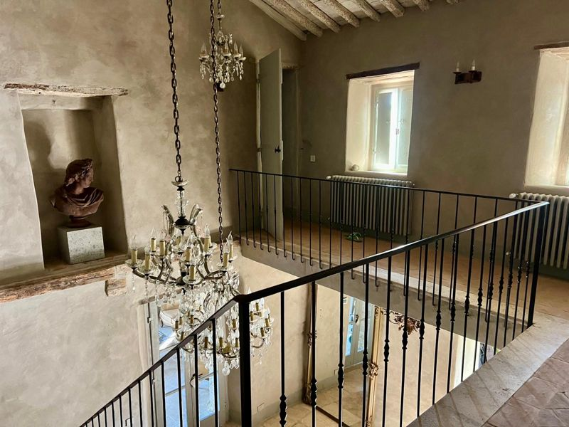
A chandelier-lit staircase leading up to four of the five bedrooms.
The Outdoors
Breakfast on the terrace, lunch under the pergola, a siesta in the hammock and dinner among the olive trees.
View the full gallery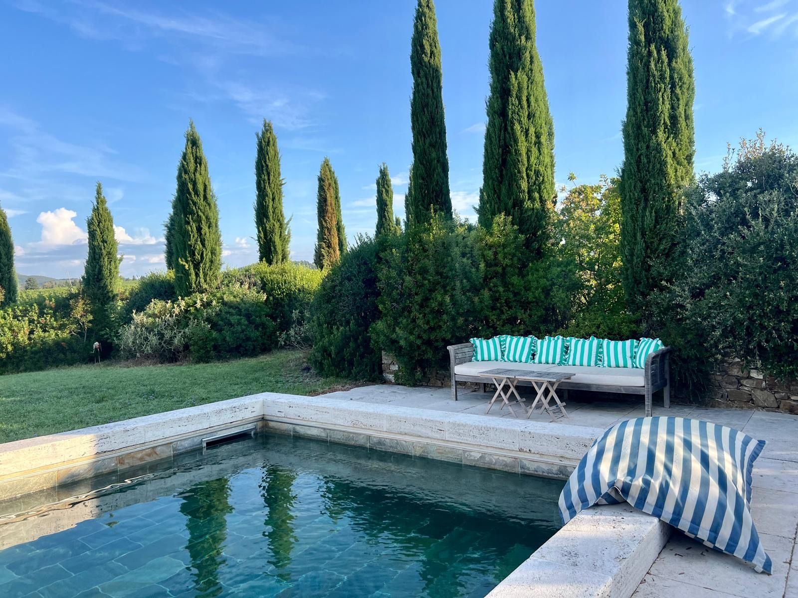
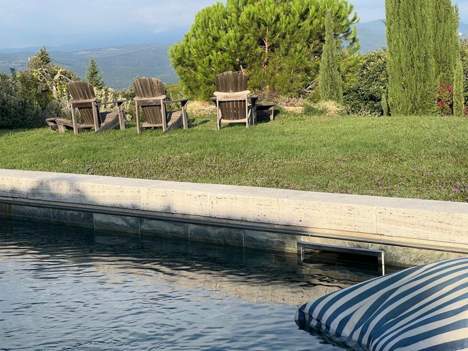
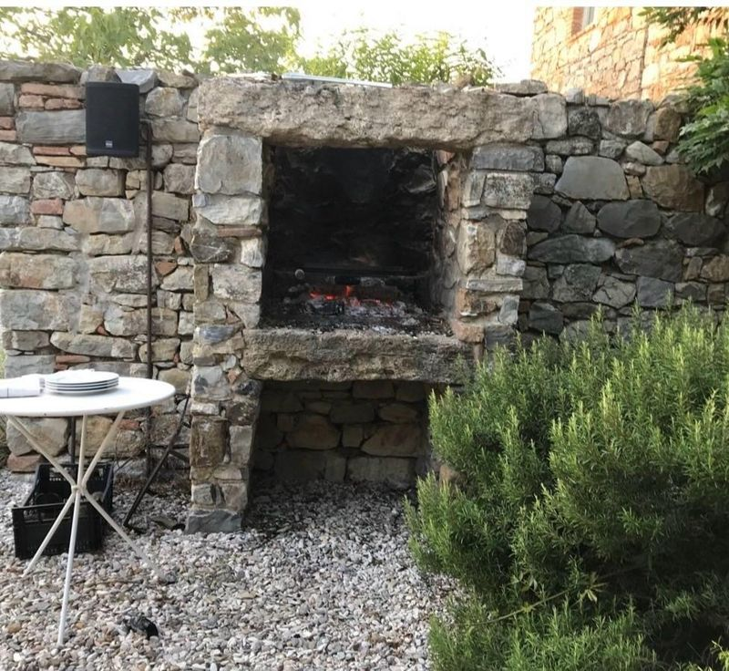
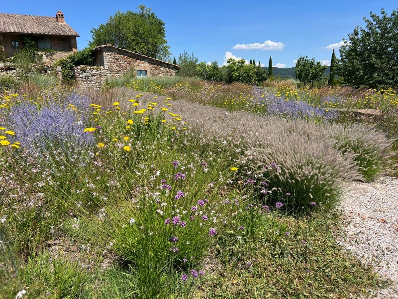
A shaded table for twenty, looking over the pool and the valley.
Fifteen metres by four and a half, with loungers, a summer bed and views to the hills.
The original wood-fired oven, still perfect for pizza nights.
A bocce court and table tennis for long afternoons.
A table set among the trees for lunches and candlelit dinners.
Quiet corners all over the garden to read, doze or open a bottle.
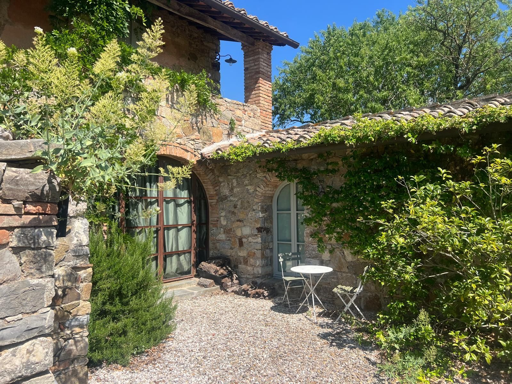
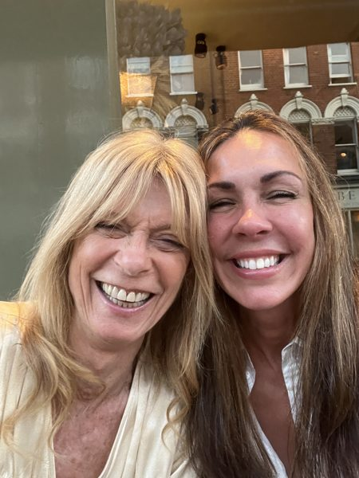
Our Story
Casa Rossa is a podere, one of the farmhouses where the estate's workers once lived. Two outside staircases tell you two families shared it, with the animals below and the people above. It was a working farm until the 1960s, and the bread oven in the garden is so large it probably baked for every podere on the estate.
We bought it in 1999, when parts of the roof were missing and some rooms were too dangerous to enter. Restoring it took ten years. The outside is almost exactly as it was; inside, original stone and beams sit alongside touches of Rococo, industrial pieces and contemporary design. It has been our family home for nearly twenty years.
Comfortable, friendly, elegant in places, with soul. A house that is well loved and welcoming.
Pat and Mark
Enquire
Tell us when you would like to come and who will be joining you, and we will be in touch personally. You can see which weeks are still free on our availability page. We aim to respond to all enquiries within 24 hours.